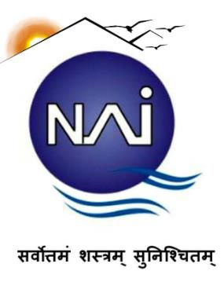

10 Mission-Critical Defence Modules
Explore how AIIMS solves the toughest military logistics, precision calibration, explosive safety, and air-gapped security challenges across the entire armament lifecycle.
1. Production of Arms and Armaments
Naval munitions manufacturing involves hazardous chemical synthesis, explosive pouring, precision forging of shell casings, and strict stage-gate quality control across ordnance factories and naval armament production depots.
⚠️ The Difficulty Explained Simply: The "Pyrotechnic Needle in a Haystack"
A single heavyweight torpedo contains over 3,200 individual sub-assemblies—from silver-zinc battery cells to micro-machined gyroscopes and 450 kilograms of high-explosive compound. If one chemical batch of propellant has an imperceptible moisture deviation during pouring, it might burn irregularly 3 years later during combat. Tracking this manually across paper logs was virtually impossible.
🛡️ How AIIMS Conquered It: Dynamic Product Tree & Batch Genealogy
AIIMS structures every weapon as a multi-tier recursive Product Tree. Every serial number is bound to its raw material chemical certificate, foundry casting heat number, and explosive filling lot. If an issue is flagged in an inspection, AIIMS performs a 1-click genealogy sweep, instantly identifying and quarantining every other munition sharing that same explosive pour across all 4 Naval Commands.
2. Orders and Contracts Management
Defence procurement operates under rigorous statutory oversight (Defence Procurement Procedure), multi-year delivery timelines, and strict Factory Acceptance Test (FAT) clearances.
⚠️ The Difficulty Explained Simply: The Disconnect Between Contracts & Quality
In traditional systems, the team issuing purchase orders never communicates smoothly with the naval inspectors standing on the factory floor. Batches were sometimes shipped before quality tests were finished, or penalties for delayed milestones were lost in bureaucratic paper trails between New Delhi and coastal naval bases.
🛡️ How AIIMS Conquered It: Quality-Gated Contract Milestones
AIIMS directly locks procurement milestones to technical inspection passes. A defence contractor cannot receive automated dispatch clearance or milestone billing approval until the designated Naval Armament Inspector (NAI) submits a cryptographically signed FAT clearance checksheet directly into the system.
3. Secure Rugged Devices & Offline Field Sync
Naval ordnance inspections occur in extreme environments: underground explosive magazines, wet submarine compartments, and rocking warship decks where consumer laptops and wireless radiation are illegal.
⚠️ The Difficulty Explained Simply: "Updating a Tablet Where Wi-Fi Could Trigger an Explosion"
Naval safety directives strictly ban Wi-Fi, Bluetooth, and cellular signals inside ammunition magazines to prevent stray RF currents from detonating electro-explosive fuzes. How do you push software updates and extract inspection data from tablets when they can never connect to the internet or depot Wi-Fi?
🛡️ How AIIMS Conquered It: The Dual-Port Docking Architecture
Each rugged tablet runs a companion updater daemon on Port 9090 with a local encrypted database. Inspectors work completely offline. When returning to base, they dock the tablet into an authorized Client PC. The system automatically executes a 1-click differential sync using encrypted .aisync bundles. If a software update is pending, it verifies the SHA-256 hash, hot-swaps the JAR service, runs an automated health probe, and automatically rolls back if anything fails.
4. Dynamic Digital Checksheets & Tolerances
From torpedo tube guide-rail alignment to gun barrel bore erosion, every weapon has exacting tolerances. AIIMS replaces stacks of paper checksheets with smart, reactive digital inspection forms.
⚠️ The Difficulty Explained Simply: The Danger of a Single Handwritten Typo
A submarine torpedo tube has a clearance tolerance of fractions of a millimeter. If an inspector misread a dial gauge or wrote "533.9mm" instead of "533.4mm", a torpedo could jam inside the tube during a combat launch. On paper, these anomalies were buried in binders until it was too late.
🛡️ How AIIMS Conquered It: Real-Time Guardrail Validation
AIIMS checksheets feature active mathematical bounds. As the inspector enters each measurement, the system visually highlights values as PASS, MARGINAL, or CRITICAL ANOMALY. Out-of-spec readings automatically trigger an alert to the Senior Inspector before the weapon can be marked serviceable.
5. Calibrations & NABL Metrology Traceability

Accredited under ISO/IEC 17025 (NABL) guidelines, the calibration module ensures that every testing device in naval labs maintains verifiable measurement traceability to national primary standards.
⚠️ The Difficulty Explained Simply: The Domino Effect of Uncalibrated Gauges
If a master pressure gauge used to test missile pneumatic seals drifts by 2% without anyone noticing, hundreds of missiles tested with that gauge become legally suspect and operational liabilities. Tracking thousands of gauges across multiple dockyard labs was a recurring logistical nightmare.
🛡️ How AIIMS Conquered It: Automated Periodicity Lockdown & Traceability Chain
AIIMS maintains an unbroken digital hierarchy from National Physical Laboratory standards down to the depot micrometer. If an instrument's calibration expires, AIIMS locks its serial number in the database—preventing any inspector from selecting it on a live checksheet until it is recalibrated and certified.
6. Executive Dashboards Monitoring Everything
Gives the Naval Staff, Fleet Commanders, and Depot Masters instant visual intelligence on ammunition availability, shelf-life expiry curves, and pending inspection queues.
⚠️ The Difficulty Explained Simply: "Can the Fleet Sail Tonight?"
When naval operations demand immediate deployment, commanders need to know within 10 seconds: *How many A1-serviceable torpedoes and surface-to-air missiles are stocked at Vizag and Mumbai?* Sifting through spreadsheets or making phone calls to depots wasted hours.
🛡️ How AIIMS Conquered It: Sub-Second Fleet Readiness Telemetry
AIIMS aggregates lakhs of status points in real-time, displaying actionable command dashboards with color-coded readiness heatmaps. Commanders can zoom from high-level fleet reserves down to an individual torpedo's serial number with two clicks.
7. Series Inspection & Proof Sentencing
Governs proof firing trials, Serviceability Reliability Factor (SRF) testing, and definitive sentencing: marking munitions as Fit for Fleet (A1), Restricted (Practice Only), Overhaul Required, or Scrapped.
⚠️ The Difficulty Explained Simply: Strict Sentencing Accountability
Sentencing ammunition to be scrapped or fired requires legal and military justification. Scrapping good ammunition wastes crores of taxpayer funds; approving degraded ammunition can destroy a naval gun barrel during live combat.
🛡️ How AIIMS Conquered It: Algorithmic Proof Sentencing Engine
AIIMS incorporates formal naval sentencing formulas directly into its logic. It compiles muzzle velocity, pressure curves, and primer indent depth, comparing them against historical series data to generate tamper-evident proof sentencing certificates with full digital signatures.
8. Naval HRMS & Granular Role Access Control
Manages the specialized workforce of naval armament officers, civilian depot technicians, and quality inspectors while enforcing strict segregation of duties.
⚠️ The Difficulty Explained Simply: "Who Inspects the Inspector?"
In military quality control, an inspector cannot certify their own checksheet, and personnel transferred to a new warship must have their permissions instantly updated to prevent them from approving munitions for their previous command.
🛡️ How AIIMS Conquered It: Dynamic Posting-Aware Role Mapping
Roles are tied directly to active posting orders and official naval ranks. When an officer is transferred between Western and Eastern commands, AIIMS automatically migrates their database view while locking sensitive approvals behind two-man dual-authorization keys.
9. Defence-Grade Security & VAPT Hardening
Engineered to operate inside a secured, air-gapped Naval Command Network (NCN) with zero tolerance for cyber intrusion, lateral movement, or data corruption.
⚠️ The Difficulty Explained Simply: Extreme Threat Vector Defense
Hostile state actors consider naval armament repositories primary targets. Even on an air-gapped intranet, insider threats, infected USB thumb drives, or rogue client machines could attempt unauthorized database tampering.
🛡️ How AIIMS Conquered It: Comprehensive Multi-Layer Hardening
Full clearance of CERT-In VAPT audit checks: zero SQLi/XSS/CSRF vectors, parameterized queries, rate-limiting, encrypted binary hashes, and an automated background SFTP service that securely streams all [SECURITY-AUDIT] logs to an isolated remote monitoring vault.
10. Load Balancing & Lakhs-Scale Concurrency
Architected to handle peak concurrency during fleet mobilization—when hundreds of rugged devices, depot workstations, and command centers query and submit data simultaneously.
⚠️ The Difficulty Explained Simply: Preventing Database Choke During Crises
During a national naval alert, every base begins issuing munitions and logging firing checks simultaneously. Poorly optimized web applications crash under sudden spikes in write traffic.
🛡️ How AIIMS Conquered It: Clustered Architecture & Neutral Indexing
High-availability reverse proxy layer distributing traffic across NCN Server VMs, decoupled asynchronous event processing for batch uploads, and Neutral Parameter Indexing ensuring that heavy analytical queries never slow down critical field write operations.